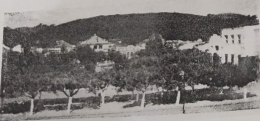

<!DOCTYPE html>
<html lang="en">
<head>
	<base target="_top">
	<meta charset="utf-8">
	<meta name="viewport" content="width=device-width, initial-scale=1">
	
	<title>Quick Start - Leaflet</title>
	
	<link rel="shortcut icon" type="image/x-icon" href="docs/images/favicon.ico" />

    <link rel="stylesheet" href="https://unpkg.com/leaflet@1.9.4/dist/leaflet.css" integrity="sha256-p4NxAoJBhIIN+hmNHrzRCf9tD/miZyoHS5obTRR9BMY=" crossorigin=""/>
    <script src="https://unpkg.com/leaflet@1.9.4/dist/leaflet.js" integrity="sha256-20nQCchB9co0qIjJZRGuk2/Z9VM+kNiyxNV1lvTlZBo=" crossorigin=""></script>

	<style>
		html, body {
			height: 100%;
			margin: 0;
		}
		.leaflet-container {
			height: 100%;
			width: device-width;
			max-width: 100%;
			max-height: 100%;
		}
	</style>

	
</head>
<body>


<div id="map" style="width: device-width; height:device-heightth;"></div>
<script>

	const map = L.map('map').setView([-21.20636, -41.88920], 14);
	
	
	//DIVISÃO
	//ICONES
	//DIVISÃO
	
	
	var redIcon = new L.Icon({
		iconUrl: 'https://raw.githubusercontent.com/pointhi/leaflet-color-markers/master/img/marker-icon-2x-red.png',
		shadowUrl: 'https://cdnjs.cloudflare.com/ajax/libs/leaflet/0.7.7/images/marker-shadow.png',
		iconSize: [25, 41],
		iconAnchor: [12, 41],
		popupAnchor: [1, -34],
		shadowSize: [41, 41]
			}); 
			
	var grenIcon = new L.Icon({
		iconUrl: 'https://raw.githubusercontent.com/pointhi/leaflet-color-markers/master/img/marker-icon-2x-green.png',
		shadowUrl: 'https://cdnjs.cloudflare.com/ajax/libs/leaflet/0.7.7/images/marker-shadow.png',
		iconSize: [25, 41],
		iconAnchor: [12, 41],
		popupAnchor: [1, -34],
		shadowSize: [41, 41]
			}); 
			
	

	const tiles = L.tileLayer('https://tile.openstreetmap.org/{z}/{x}/{y}.png', {
		maxZoom: 19,
		attribution: '&copy; <a href="http://www.openstreetmap.org/copyright">OpenStreetMap</a>'
	}).addTo(map);

	
	//DIVISÃO
	//MARCADORES 
	//DIVISÃO
	
	
	const marker = L.marker([-21.20698, -41.88931], {
		draggable: true,
		title: "Praça Nilo Peçanha"
	}).addTo(map).bindPopup('<h1> Praça Nilo Peçanha</h1> <p>Antiga Praça da Liberdade</p> ');

	const marker2 = L.marker([-21.20634, -41.88846], {
		draggable: true,
		title: "Matriz São José do Avahy"
	}).addTo(map).bindPopup('<h1>Matriz São José do Avahy</h1> <p>Matriz Central</p> ');
	
	const marker3 = L.marker([-21.20946, -41.88664], {
		draggable: true,
		title: "Camara Municipal"
	}).addTo(map).bindPopup('<h1>Camara Municipal 1889</h1> <p>Primeira Camara Municipal de maioria Republicana do Brasil</p> ');
	
	const marker4 = L.marker([-21.1872865, -41.8104148], {
		draggable: true,
		title: "Fazenda Sossego",
		icon: grenIcon,
	}).addTo(map).bindPopup('<h1>Fazenda Sossego</h1> <p>Fundador: Joaquim Barbosa.	<br> Ref Página 61</p>');
	
	const marker5 = L.marker([-21.1776861, -41.7926343], {
		draggable: true,
		title: "Fazenda Cachoeira (Bambuí)",
		icon: grenIcon,
	}).addTo(map).bindPopup('<h1>Fazenda Cachoeira (Bambuí)</h1> <p>Fundador: Antônio Martins Ramos.	<br> Ref Página 61</p>');
	
	const marker6 = L.marker([-21.2838761, -41.9692478], {
		draggable: true,
		icon: grenIcon,
		title: "Fazenda Cubatão"
	}).addTo(map).bindPopup('<h1>Fazenda Cubatão</h1> <p>Fundador: Tenente Coronel Geraldo Rodrigues de Aguiar.	<br> Ref Página 61</p>');
	
	
	const marker7 = L.marker([-21.310712037865052, -41.96163965506555], {
		draggable: true,
		icon: grenIcon,
		title: "Fazenda Limoeiro"
	}).addTo(map).bindPopup('<h1>Fazenda Limoeiro</h1> <p>Fundador: José da Terra Pereira.<br> No curso do ano de 1840, uma figura marcante na história regional, José da Terra Pereira, desembarcou neste município, iniciando uma jornada que moldaria o cenário local de maneira indelével. Ele estabeleceu as bases da fazenda Limoeiro, situada às margens direitas do rio Muriaé, aproximadamente quatro quilômetros acima da área que viria a se tornar a cidade de Itaperuna. Sua chegada foi sinônimo de desbravamento, enfrentando as densas matas e lançando as sementes que germinariam na forma da notável família Terra Vieira, uma linhagem que se tornaria tradicional no município ao longo dos anos.	<br> Ref Página 61</p>');
	
	const marker8 = L.marker([-21.2173099,-41.8712407], {
		draggable: true,
		title: "Aeroporto Regional"
	}).addTo(map).bindPopup('<h1>Aeroporto Regional</h1> <p>Matriz Central</p> ');
	
	const marker9 = L.marker([-21.174689,-41.9540899], {
		draggable: true,
		icon: grenIcon,
		title: "Fazenda Floresta"
	}).addTo(map).bindPopup('<h1>Fazenda Floresta</h1> <p>Fundador: Francisco de Lannes Dantas Brandão (filHO).	<br> Ref Página 61</p>');
	
	// DIVISÃO //
	/* EXTINTOS*/
	// DIVISÃO //
	
	
	const ext1 = L.marker([-21.20129, -41.89516], {
		draggable: true,
		icon: redIcon,
		title: "Fazenda Porto Alegre"
	}).addTo(map).bindPopup('<h1>Fazenda Porto Alegre</h1> <p><p>Fundador: José de Lanes Dantas Brandão.<br> Tempos depois, josé de Lanes desceu de Faria Lemos e fixou-se no local onde é hoje a fazendo de Pôrto Alegre, derrubando matas e cultivando suas terras. Voltando ocultamente em 1833 ao arraial de arrepiados (hoje Rio Branco), seu lugar de origem, José de Lannes  de lá trouxe uns 20 escravos e um indivíduo de nome Bambuí, a quem doou os terrenos onde fica o córrego que tomou êsse nome, a alguns quilômetros da sede da cidade.	<br> Ref Página 61</p>');


</script>


</body>
</html>
